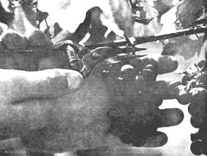
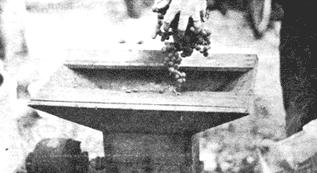

The grape is a fantastic little chemical plant that has fascinated man since its vines first curled a tendril around the pillars of history.
Man has minced and munched them, beaten and baked them, stomped and tromped them, peeled and congealed them, dried and fried and fermented them.
The grape is a near-perfect, self-contained fermentation package. Inside the skin is just about the right amount of sugar and acids to satisfy ravenous yeasts and bacteria hanging around on the skin. Crush the grape and these interact, forming alcohol and eventually wine, and possibly vinegar.
David H. Benzing, assistant professor of biology at Oberlin College, is among those fascinated fans of the grape. He has been with the college five years. His specialty is plant physiology and ecology.
What's all this got to do with wine making? Not a thing except that Benzing happens to like good wine and he's convinced that some of the best wines can be homemade.
As an eighth grader he turned grape snatcher, raiding the vines of neighbors in Mansfield to make his first batch of wine. Was it a success? Well, not so much a success as a blast. The whole mess blew up.
He tried again in the 10th grade and this time it was a success . . . but a pretty sour one. Nobody could drink the stuff.
But now, with some years or experimentation behind him.
Benzing turns out a wine that would make old Fourchette Escargot tip his hat, blow a kiss and whisper, "le beau vin!"
With a sharp eye for a bargain, Benzing says, you can outfit yourself with all the necessary equipment for wine making for less than $100. If you are good with tools, you can make the stuff for a fraction of that.
His equipment includes a hand-operated grape press he picked up at an auction. However, these can be purchased new at modest cost.
His grape crusher is handmade, purchased from a farmer. It's simply an open-ended hopper with a wooden cylinder studded with brass nails and driven by an electric motor. The crusher is mounted on a large crock which catches the crushed grapes.
He uses five-gallon glass bottles (carboys) for fermenting. He buys them from a firm that sells spring water. These bottles are chipped and cannot be used commercially but are good for home use.
For storage, used wine bottles gathered from friends. The corks he buys from a mail order firm. Wine corks are difficult to get from local outlets.
But how about the bag used in the grape press? Is that a hard-to-get item? Well, not really. He uses the family laundry bag when it is not being used for other things.
Without taking overhead costs into consideration, Benzing estimates home-made wine will cost about 40 cents a bottle if you buy the juice.
If you buy the grapes and press them, the cost will be about 30 cents a bottle and if you grow the grapes and press them, the cost drops to a few cents a bottle.
To demonstrate his wine-making technique, which is rather casual, he set up his press and crusher in the driveway.
Right away he attracted two Ph.D.'s and their wives who gave him a hand, thus proving that wine, indeed, has an amazingly social property that goes into effect even before it is made.
Benzing hosed off the spiders and webs, hosed out last year's residue from the carboys and set his crusher on a large crock.
He fed grapes through the crusher until the crock was filled, stuffed the mangled grapes along with a few fruit flies, spiders, yellow jackets and little black beetle's into the laundry bag, squished the whole mess in the press gathering the juice in a plastic refrigerator bowl, then poured the juice into the fermentation carboys.
It is easy, but not as easy as it sounds.
A key factor in making good table wine, Benzing says, is the sugar content of the grape - 22 % to 24% is ideal. Often additional sugar must be added since local grapes rarely exceed 20%.
How do you determine the sugar content of a grape? You buy, beg, borrow or steal a refractometer. That's a little tube-shaped instrument you squeeze a drop of grape juice into, squint through and take a reading.
When sugar content is at the desired level, you start picking the grapes. Benzing figures 14 pounds of grapes for a gallon of juice and a gallon of juice makes about a gallon of wine.
If you don't want to invest in a press or crusher, you can buy the juice from a vineyard equipped with a press. The sugar content of the juice can be measured with a hydrometer, the same type used to measure the antifreeze in you car.
Benzing's driveway production was white wine, using Delaware and Seyval Blanc varieties, purchased at a vineyard owned by Emil J. Novotny, State Road (Rt. 60), Vermilion. In addition to Novotny's commercial plantings, Benzing and Dr. Robert Pugilese, Columbus psychiatrist, maintain an experimental vineyard containing 40 to 45 varieties including five grafted French vinifera types, considered by most experts to be the best wine grapes available.
Benzing poured juice into the five-gallon carboys only to the shoulders.
During primary fermentation, yeast feeds on the sugar, making alcohol. In the process great quantities of carbon dioxide gas (C02) are released. If the carboy is filled to the neck the violent action of escaping gas can force the juice to spill out, causing a great gloppy mess and a loss of wine.
With a flourish, Benzing tore up an old sheet for wadding, which he stuffed into the necks of the carboys to keep bugs from the murky, foul-looking liquid, but still allow ing gas to escape.
He moved the garage. The yeast kept steadily at work until it had made about 12% alcohol . . . then it quit . . . went nto a dormant stage and settled to bottom with other assorted crud.
At this stage, the wine looked like the mess in a stopped-up kitchen sink, and the sour taste was unbelievable.
Secondary fermentation is launched by a little bacterium (harmless to man) that has a thing about malts acid, a natural constituent of the grape. Another natural acid, tartaric acid, has formed in crystals on the bottom and no longer contributes its sourness to the wine.
Wine has to have some acid in it for that zestful tang, but concentrated malts acid tastes like yechh to man and like hmmmm to bacteria.
So the bacteria chomp up the malts acid molecules changing them to lactic acid which is hmmmm to man and yechh to bacteria.
The beginning of this process is usually marked by a sharp fall in C02 production. Bubbles still rise but at a much slower rate.
Right here things get tricky.
Benzing advises topping the carboys (filling them up to the neck with excess juice set aside in smaller jugs) and putting on a water lock about the time the wine begins to clear.
A water lock is a stopper device which allows C02 to bubble out through water but does not allow oxygen to come in. If the wine is exposed to oxygen for too long a time, at this point, it will start to turn to vinegar. So it is best, Benzing says, to be a little early, rather than a little late with the water lock.
During the secondary fermentation the wine clears, all the crud falls to the bottom. This stage takes anywhere from a few weeks to months, depending on the acidity of the juice and the temperature. If the temperature falls below 55, the process stops until a warm-up comes along.
Adding another casual facet to the art of wine making, Benzing scrubs out his used wine bottles in the bathtub. After they have been rinsed and allowed to dry, he si phons the wine off into his sparkling little bottles. Only the layer of crud is left in the carboys.
The small bottles are corked and stored an their sides in a place where the temperature will stay between 55 and 60. The bottles are kept on their sides to bloat the corks with wine, insuring a perfect air seal.
Now the third stage of aging takes place. This very slow action is the conversion of certain trace compounds of the grape into other compounds, causing subtle changes in color, taste and odor but not alcohol. It stays the same.
After two or three years of lying around (the wine, not you), it's fes tival time! But if you can't wait that long for the white wine to reach its peak, Benzing says you can pop a cork the following spring.
The making of red wine differs slightly. The crushed grapes (Benzing suggests Foch or Siebel 10878) are allowed to ferment in the crocks a week before pressing.
This allows pigments in the skin to blend with the juice giving the wine its rich red color and the characteristic red wine flavor. Be sure to remove the stems before the crushed grapes ferment or they will impart a bitterness to the wine.
Red also will age longer than white, keeping well in an air-tight bottle for four to five years or longer.
The process for sweet wines is essentially the same as that for table wines, except sugar is added to the juice, 5% to 6% above the level desired for table wines.
Uncle Sam says you can make 200 gallons of wine per year for home use without paying a tax, and unless you have a huge drinking family or are Herman P. Lushwell, that should be plenty. Two hundred gallons a year is about 1,000 bottles.
To keep Uncle informed, however, you must write the Internal Revenue Service, Alcohol and Tobacco Division. If you live in the Cleveland area, that office is in Room 329, the Federal Building, 1240 E. 9th Street, Cleveland, Ohio 44199.
The tax people will send you two forms that you must fill out and send to Uncle five days before you plan to start wine production.
Uncle wants to know where you are in case he thinks there's a little hankypanky going on with your driveway wine production facility. After all, he got 684 applications this year from Ohio for wine making and when he checks all those driveways, if there are more active viniculturists than his records show, somebody's in trouble.
For the serious amateur who wants to grow his own grapes, Benzing points out vines will cost anywhere from 50 to 90 cents apiece if purchased from a commercial grower; that is, one who sells vines to large vineyards. He suggests about 40 to 50 wines planted six to eight feet apart.
A vine often produces eight to 15 pounds so he suggests eight to 10 vines of each variety, assuming you will want to make more than one type of wine.
Benzing says that in the early 1800s the first generation of wine grapes in this country was grown. This generation contains the well known eastern varieties and was developed from wild American grapes.
There are at least 20 of this group still cultivated, including Catawbas, Delawares, Concord, and Niagaras, which still are the backbone of wine making in the eastern part of the U.S.
A second generation was developed at the Geneva Experimental Station in New York and in other installations from about 1930 to present. However, this generation is not exclusively used in wine making. Many were primarily developed for table use.
A third generation is the French hybrid series. French and American grapes were crossed in an attempt to come up with a vine having the hardy, disease-resistant qualities of the eastern American varieties and the high-quality fruit of the French vinifera types
There are 50 to 75 types of these hybrids in cultivation. Among there are the Siebel series and the Seyne Villiard series. Some are grown in Ohio but most, in the United States, are in New York State
The mast recent improvement in eastern wine grape culture is the result of grafting European varieties onto hardy local stock. This is in the experimental stage now but at least two wineries in the east are using them.
Benzing points out that it takes three to four years for the vines to mature and that many members of each generation can be planted in this area.
And for the very serious amateur, Benzing suggests a reading list: "Wine Making at Home," by Homer Hardwick. Benzing says it is the best all-purpose book for the beginning home wine maker. "General Viticulture" by A. J. Winker; "Technology of Wine Making" by M. A. Amerine, H. HIV. Berg and W. V. Cruess; "American Wines and Wine Making" by Phil lip Wagner, and "Folk Wines," by M. A. Jagendorf.
If you don't happen to live in the Cleveland area, just go down to your friendly, neighborhood federal income tax office, wherever it may be, and request United States Treasury Department Internal Revenue Form 1541, titled "Tax Free Wine For Family Use."
|
 |
 |
|